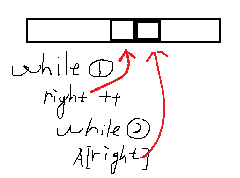
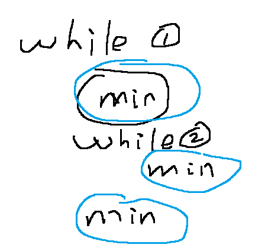

Template
Here we present a template for sliding window problem.
1 | def sliding_window(nums, window): |
The sliding window technique can be used to some two pointer problems, which makes it easy to write the code.
Common mistake
- The common mistake that I usually make is that, since I fix where to increment the index right, when going to the while loop for shrinking the size of the window, the index right should point to right+1. In this case, if we would like to use right, it has already been changed and is not the original one, especially when referring to the array index by watching out if we really want to looking at nums[right] or nums[right+1].

- The next point is that we should be careful with the left index in the second while loop
- To reasonably design where to compute the objective.

As it show here, there might be three options.